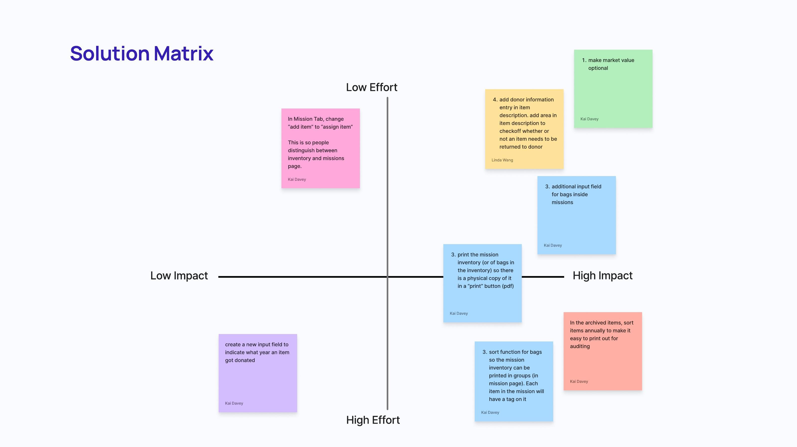
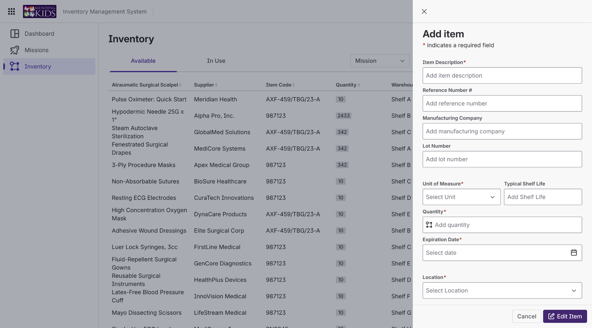
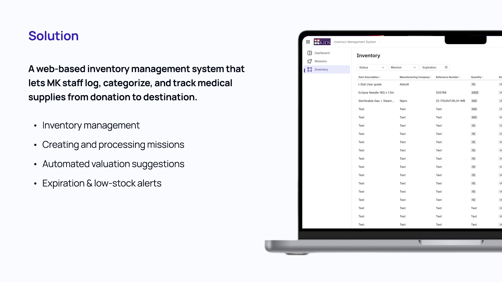
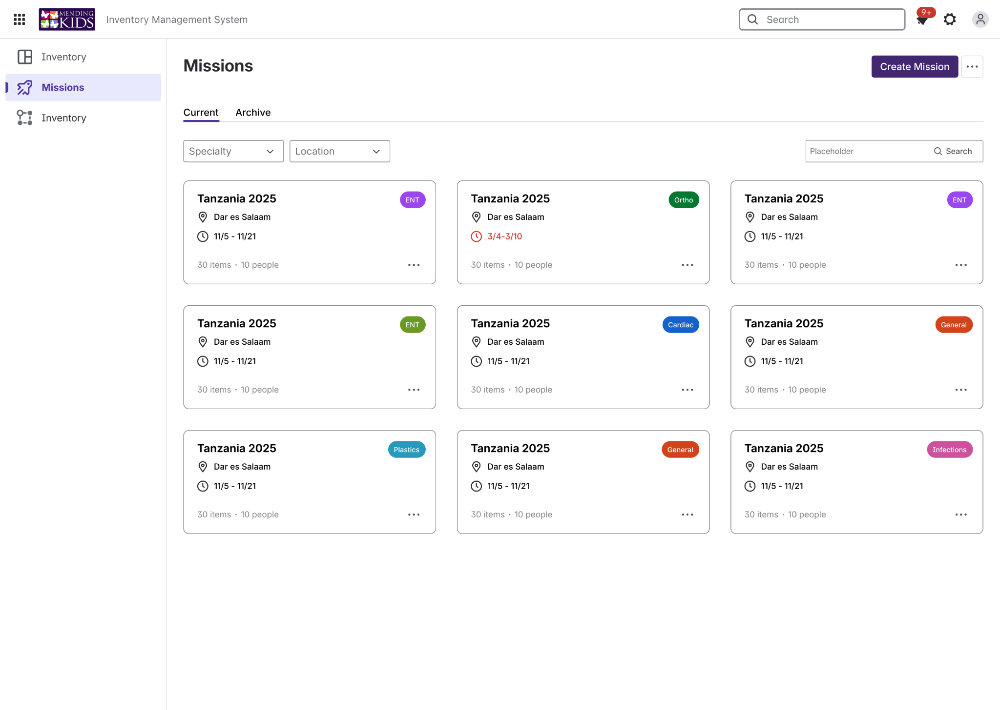
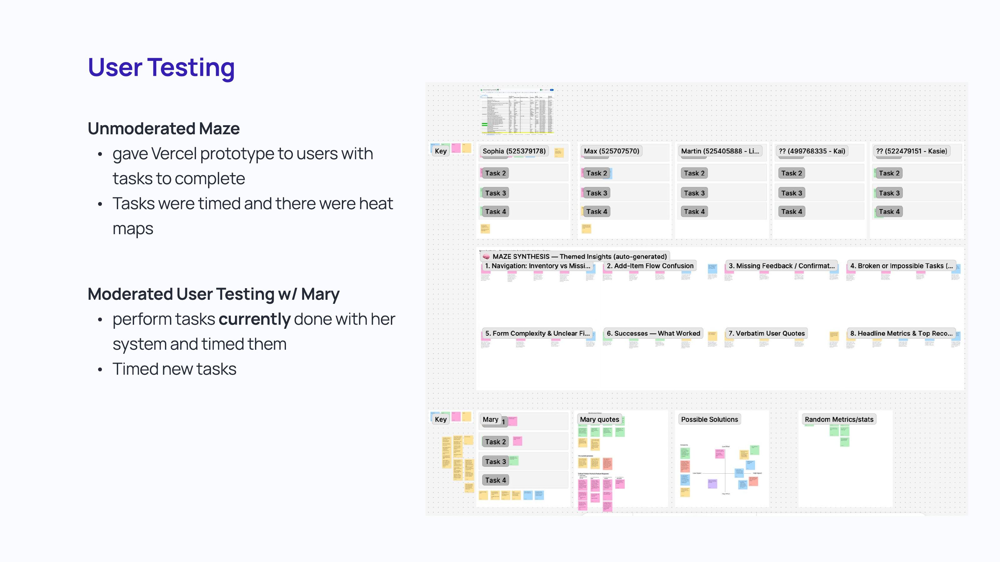
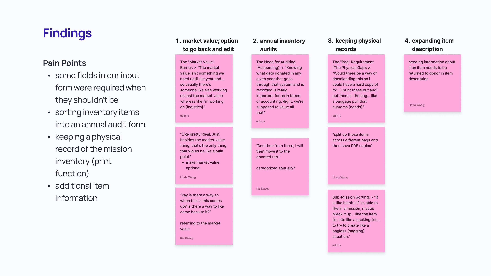

Project Info
Role Designer
Client Mending Kids
Timeline Spring 2025
Team Size 4 Designers, 1 PM, 7 Devs
A web-based inventory system that helps Mending Kids keep track of medical supplies, prepare missions, and spend less time working around a spreadsheet.

Role Designer
Client Mending Kids
Timeline Spring 2025
Team Size 4 Designers, 1 PM, 7 Devs
Frontend React, Next.js, TypeScript
Backend Supabase (SQL)
Deployment Vercel
UI Library Atlassian Atlaskit
Mending Kids provides free surgical care to children around the world. Their team manages donated medical supplies and prepares them for missions, so inventory has to stay accurate from donation all the way to deployment.
The existing inventory lived in a large Google Sheet, making it difficult to search, update, and keep consistent.
The team also had to handle missions, packing, customs records, expiration dates, and annual accounting.
We wanted to make the day-to-day work easier without losing the information the organization relied on.
We walked through existing tasks with stakeholders and focused on where the current process became frustrating or repetitive.
“The market value isn't something we need until like year end...” Edin Le · stakeholder feedback
The team explored different ways to create missions, reuse information from past missions, assign supplies, and close out inventory afterward.

We used a solution matrix to decide which changes were worth prioritizing.

The final system brought the most important pieces of the workflow into one interface.

Search and track supplies with item details, quantities, status, missions, and expiration information in one place.

A high-level view surfaces things that need attention, including expiration and low-stock information.

Mission workflows connect supplies to real deployments instead of treating inventory as a separate list.
The interface reflects the exceptions, paperwork, and handoffs that came up during research. Instead of forcing every task into the same workflow, the system supports the way the team actually works across inventory, missions, packing, and follow-up.
We used an unmoderated Maze study and moderated testing with Mary. Tasks were timed so we could compare how people moved through the new workflow.

Users completed tasks in the Vercel prototype. We looked at completion, timing, and heat maps.

Testing surfaced missing flexibility around market value, audits, printing, and editing item information.
The biggest lesson from this project was that the inventory itself was only one part of the problem. Once we understood how supplies move through donations, missions, packing, customs, and accounting, the product started to make much more sense.
Explore the World Map, Nova, and Just Replay projects.
Back to selected work ↗